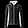
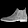

Fashion-MNIST,
on a smaller machine.
Training and deployment experiments on PYNQ-Z1. We compare a teacher network, compact INT8 students and two FPGA routes.


Try a checkpoint
Choose a model and a sample. The prediction and timing are computed locally with ONNX Runtime Web; they are separate from the board measurements below.
Loading checkpoints…
The CPU trade-off
Three students with reported accuracy and throughput. The fourth, tinyfast_xs, has a throughput record of approximately 310 img/s but no published accuracy.
10,000 test images, two inference threads and one inter-op thread. Historical values are transcribed from Table 8.
BNN-PYNQ records 83.16% test accuracy and 154,096 img/s accelerator throughput at batch 256. This timing excludes Python packing overhead and uses a different measurement scope.
Results by route
Paper records retain their original values and source references. A dash means no result was recorded. FINN 4W4A produced a runnable bitstream, but its board output did not match the reference.
| Route | Model | Precision | Params | Val | Test | img/s | 10k s | Device | Deliverable* | Source |
|---|
* Deliverable is the historical experiment label; it does not mean every artifact is included in this repository. The browser demo includes five ONNX files.